Dissecting Mayor O’Connell’s FY 27 Budget
Hello everyone. Every year during budget season, I host what has become one of my favorite traditions — our Budget Conversations. This year, I hesitated before moving forward with it. There is so much happening in our country, in Tennessee, and here in Nashville that I wondered whether people still had the bandwidth for detailed conversations about budgets and government finance.
But then something important happened. Residents reached out asking when the conversation would begin. They told me they look forward to these discussions every year because it helps them better understand what Metro Government is doing and how decisions are made.
And honestly, that reminder is exactly why I continue doing this work. When I first ran for office, I promised to help bridge the gap between government and the people we serve. Too often, distrust in government grows because people feel disconnected from decisions that affect their lives every day. Budgets can feel technical and inaccessible, but at the end of the day, a budget is simply a reflection of our values. It tells us who and what we prioritize.
Why This Conversation Matters
The Metro Council’s major responsibility is passing the annual budget. Every service residents rely on — schools, police, fire protection, housing programs, libraries, parks, public health, sidewalks, traffic calming, trash collection, and transit — flows through this process. The budget is not just numbers on a spreadsheet. It reflects the values of our city.
This year’s budget conversation is especially important because Nashville is at an inflection point. We continue to experience tremendous growth, but growth alone does not guarantee equity or sustainability. Residents are struggling with housing affordability, rising healthcare costs, childcare access, transportation challenges, and the overall cost of living.
At the same time, Metro must maintain strong financial practices to avoid repeating the fiscal instability we experienced several years ago when Metro’s fund balance fell dangerously low and the comptroller intervened. In recent years, the council adopted stronger fund balance policies to ensure fiscal discipline while still allowing us to make strategic investments in the community.
Overview of the FY 2027 Budget
Where the Money Comes From
The city’s primary revenue source remains property taxes, which account for approximately 57% of total revenue. Sales tax makes up roughly 20%, while intergovernmental revenues and other fees account for the remainder.
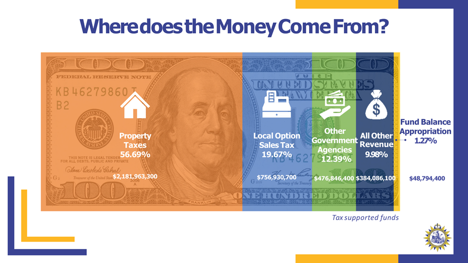
| Property Taxes | $2,181,963,300 |
| Local Option Sales Tax | $756,930,700 |
| Grants & Other Contributions | $476,846,400 |
| All Other Revenue | $384,086,100 |
| Fund Balance Appropriation | $48,794,400 |
| Total Projected Revenue | $3,848,620,900 |
Where the Money Goes
Residents often ask: “Where exactly does Metro spend nearly $4 billion?” The answer reflects the complexity of operating a major city.
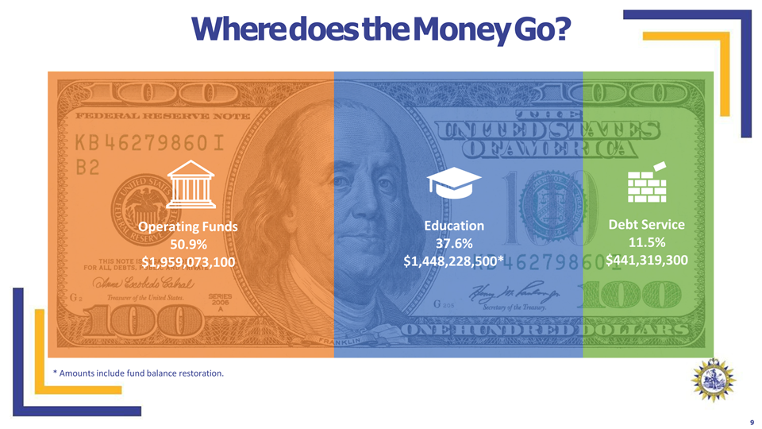
Education accounts for roughly 38% of the total operating budget. As discussed in previous budget conversations, Metro continues to carry a disproportionate share of education funding because Tennessee’s state contribution remains far below national averages.
Approximately 51% of the budget supports general Metro operations, while debt service makes up the 11%
| Debt Service | $441,319,300 | 11.5% |
| Education | $1,448,228,500 | 37.6% |
| General Operating Fund | $1,959,073,100 | 50.9% |
| Total Expenses | $3,848,620,900 | 100.00% |
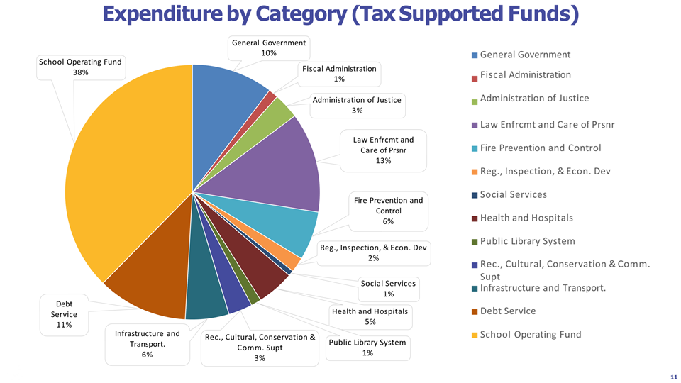
With only a 6% investment, the above pie chart reflects concerns many residents continue to raise regarding roads, sidewalks, stormwater systems, traffic safety, and long-term growth planning.
Fund Balance and Fiscal Responsibility
One of the most important financial tools Metro has is its fund balance — essentially the city’s reserve savings account. Several years ago, Metro faced serious fiscal instability when reserves dropped dangerously low, ultimately leading to scrutiny from the state comptroller. Because of that experience, the council later adopted stronger fund balance policies to protect the city’s financial health.
This year, approximately $49 million from the fund balance is being used to help balance the budget and fund one-time investments. These funds are being directed toward employee benefit obligations, housing investments, and other one-time expenditures rather than recurring long-term operational costs.
The current proposal remains within Metro’s fund balance policy guidelines, which were strengthened after prior financial instability. The policy calls of a minimum of 17% balance in opertaing funds and 50% in the debt service funds.
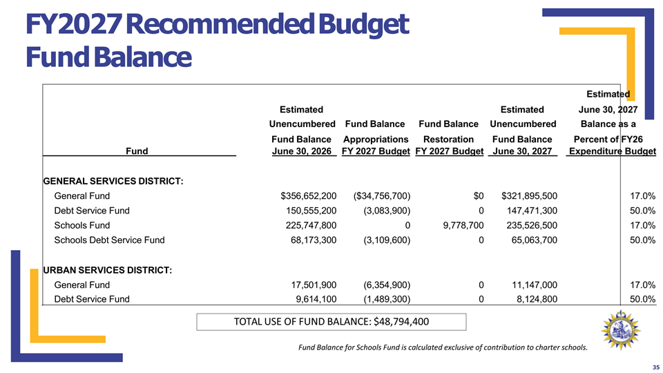
In addition, the Reserve Sustainability fund was set up last year, as an additional buffer. The % set aside is determined by the finance director and ranges from 1%-6%. The proposed FY 27 sustainability reserve is 2% for GSD and 4% for USD.
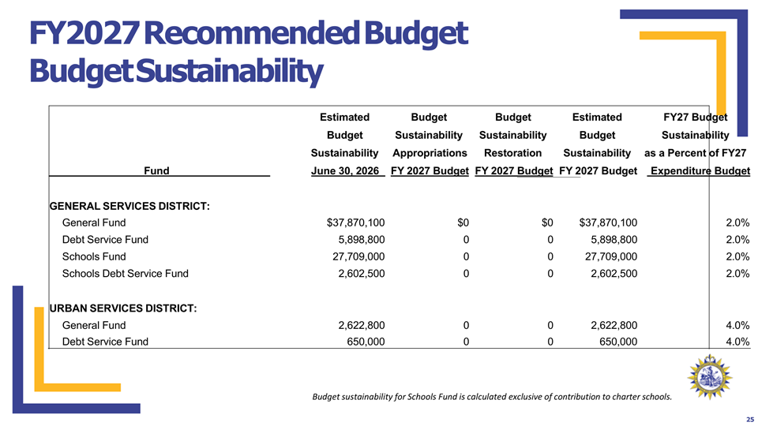
Major Highlights from the Budget
Grocery Tax Reduction
One of the most discussed components of this year’s budget is the proposed reduction in the local grocery sales tax. The state legislature failed to abolish the grocery tax but passed HB2186/SB2160 that gives metro government the choice to reduce grocery taxes. As a result, the mayor’s recommended budget include a half penny reduction in grocery tax. If approved, this will reduce the local option sales tax on grocery from 2.25% to 1.75%.
According to Finance projections, this proposal would reduce Metro revenues by approximately $12 million annually. However the expeced cost in 2027 is 9.2M. The FY27 revenue is only 10 months accounting for time it takes for the measure to be approved by the state.
Employees: Supporting the People Who Keep Nashville Running
One of the strongest parts of this year’s budget is the continued investment in Metro employees. It is very important that we take care of the people that are taking care of our city.
The proposed budget includes:
- Across-the-board pay increases
- Merit and step adjustments
- Wage adjustments
- Increased minimum wage for entry level positions to $22.50/hr
This reflects years of steady progress. Metro has worked intentionally to move far beyond Tennessee’s stagnant $7.25 state minimum wage. Metro has been a leader in trying to bridge that gap. Still, labor leaders and union representatives have continued reminding us that many workers still struggle to keep pace with Nashville’s rapidly increasing cost of living.
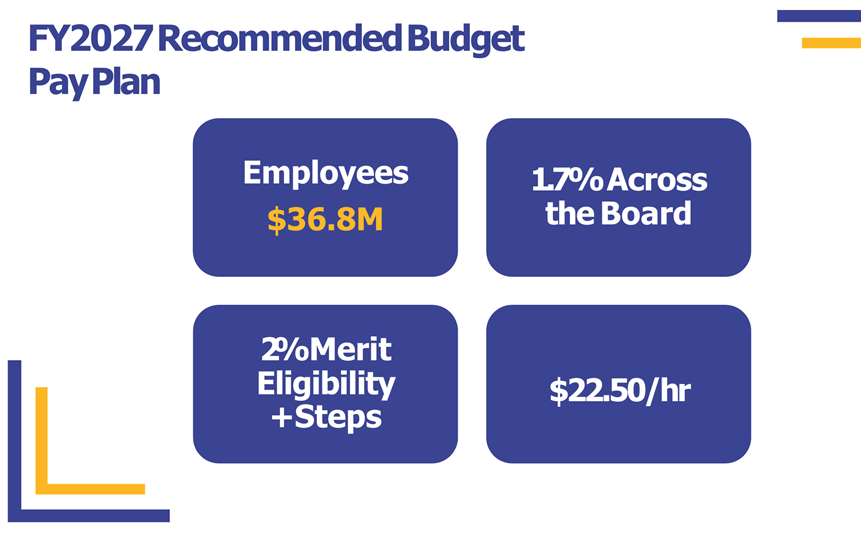
Education
Education remains the city’s single largest investment. This year will be $1.448 billion… almost $1.5 billion. This represents an additional $56M or 4% increase from 2026. This funding supports teacher salaries, transportation, textbooks, student support services, school safety initiatives, family engagement efforts, and continuity of service requirements.
Education funding remains a major challenge because Davidson County continues carrying a disproportionate burden compared to the state. In previous budget conversations, we discussed how Metro often covers nearly 79% of MNPS funding while the state contributes approximately 21%, despite statewide averages being dramatically different. This imbalance places continued pressure on local government to ensure schools receive the resources students and educators need.
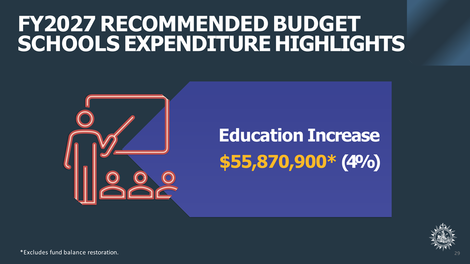
My next budget conversation will be with MNPS Board Budget Chair- Dr. Berthena Nabaa- McKinney where we will take a look at the MNPS budget details.
Housing: Nashville’s Biggest Long-Term Challenge
If there is one issue that touches nearly every policy conversation in Nashville, it is housing. Housing remains one of Nashville’s defining challenges. Housing affects nearly every issue we discuss as a city — homelessness, workforce retention, transportation, economic mobility, and public health.
The proposed budget include the following investments in housing:
The mayor’s budget includes an additional $6 million investment in the Barnes fund. This raises total funding to approximately $22 million. While I appreciate the $22M, as a member of the Housing task force, I believe the investment in Barnes fund should be at least $30M, as recommended by the task force. Barnes funds allows developer to leverage Barnes fund with other funding sources for affordable housing developments.
Additionally, the budget introduces a new $7M revolving loan fund designed to support affordable housing development. This loan structure allows developers to borrow funding temporarily to complete affordable housing projects and repay those funds later, creating a sustainable financing cycle for future developments.
The Mayors budget also includes $8 million in various Housing PILOT programs. LITHC Cap- $5M, Mixed Income Cap- $2M and PSH Cap at $1M.
Finally, one that is dear to me, the Mayor’s budget incude a $2.4M continued funding of the Eviction Right to Counsel program. While we continue to advaocate for more housing, the ERTC program enable us to help keep residents in the homes they already have. According to the latest Stout Report (an independent consultant assessment of the program), the program yielded a $4 savings for every dollar spent. Grateful to Legal Aid, Hispanic Bar, NCRC, AMAC, Rooftop and all the ERTC partners.
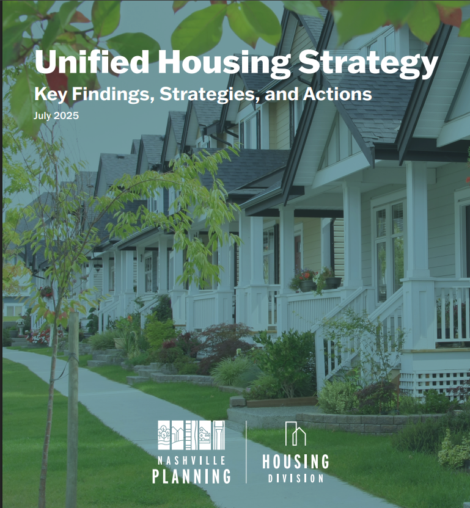
The End of ARPA Funding
Another challenge facing this budget is the expiration of federal COVID relief funding. But those funds are ending, meaning Metro must now decide which programs can be sustained locally. The mayor’s budget include $5M funding for The Office of Homeless Servicess and $700K for the Office of Family Safety and other programs previously funded by ARPA.
Other highights
- $8.5 M additional funding for the Sheriff Department due to overcrowding
- $7M funding for General Hospital
- $10M for Correctional Healthcare
- $1M Tax Relief
- $4.2 Juvenile Court
- $1.4M – Assessor of Proeprty- 2 -year reappraisal program
Q & A
My property taxes have inreased by 40%, why is the budget not showing a huge property tax increase?
The property taxes increase is not showing in 2027 because it was part of the 2026 budget. The increase is not new in 2027. The increase is reflected in the FY 26 budget- when the year to year revenues went from $3.28 billion in 2025 to $3.8 billion in 2026 (the year of the increase)
What does Metro Budget look like for the past couple of years?
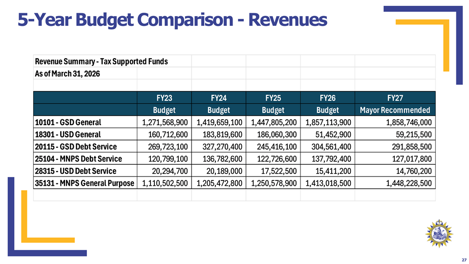
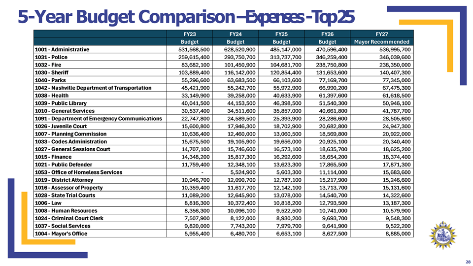
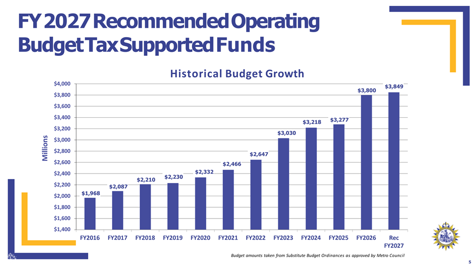
Community Input Matters
One of the most meaningful parts of these budget conversations is hearing directly from residents. There will be a budget public heaing on Tuesday June 2nd. Please plan to attend and share your thoughts on the budget with the council. Government works best when residents stay engaged.
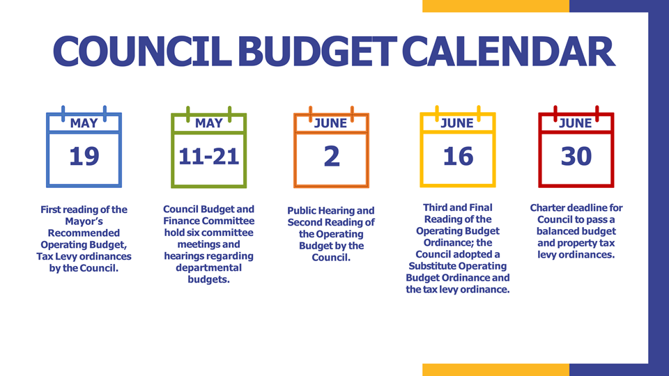
If you missed this Budget Conversation, you can watch the entire episode at the link below.
NEXT BUDGET CONVERSATION
This year’s budget conversation will be every Sunday at 3pm on Facebook until the budget is passed by Metro. On the next episode on the 24th, we will be discussing all things MNPS. Dr. Battle & her team will present the FY 27 budget to council on 05/21/26. Join MNPS board vice chair and budget chair Dr. Berthena Nabaa-McKinney and I for a continued conversation on the budget. Join us on Facebook live at https://www.facebook.com/CouncilmemberZulfatSuara/ with your questions & comments.
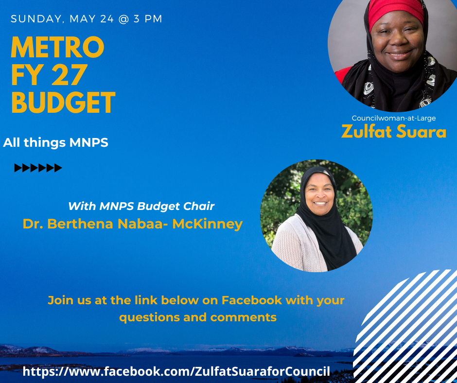
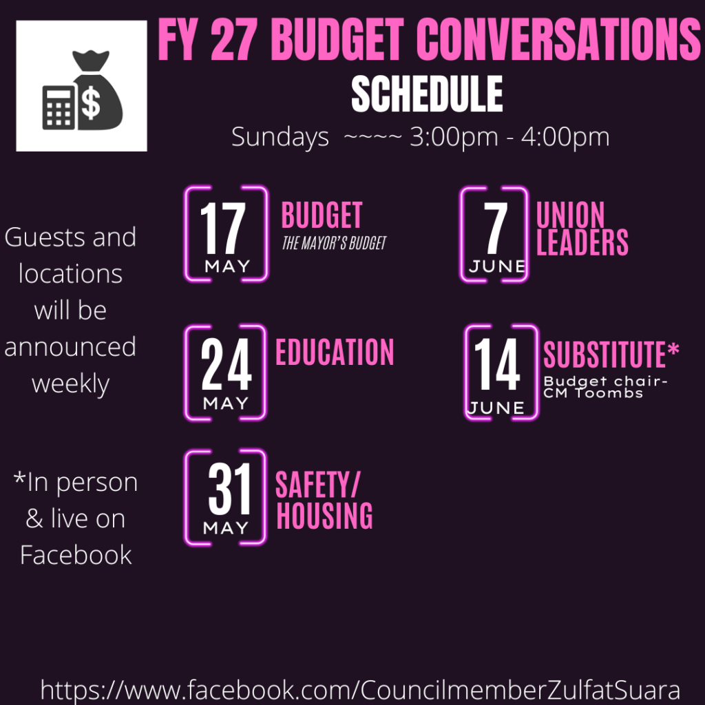
Final Thoughts
The FY 2027 budget reflects both Nashville’s strengths and its growing challenges. We are financially stronger than we were several years ago. We have healthier reserves, stronger policies, and continued economic momentum. But we are also facing difficult realities:
- Rising housing costs
- Infrastructure demands
- Affordability concerns
- Childcare challenges
- Workforce retention
- Education funding pressures
Ultimately, this budget conversation is about more than numbers. It is about people. It is about whether Nashville continues becoming a city where working families, teachers, first responders, seniors, young professionals, and longtime residents can all thrive together. Thank you for continuing to engage in these conversations and for allowing me the opportunity to serve.
Together, we can continue building a Nashville that works for everyone. Please continue to stay engaged and share your thoughts and ideas about the budget and other important issues facing our city. I value your input and believe that open dialogue and collaborative decision-making are key to effective governance. Together, we can ensure a bright and sustainable future for our great city.
Stay tuned for future budget conversations and feel free to reach out if you have any further questions.
Thank you for joining us in this conversation.